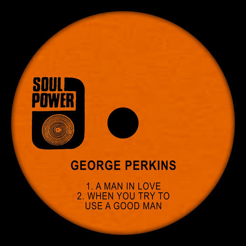

George Perkins
George Perkins was an American soul singer, best known for his 1970 hit "Crying In The Streets" which was based on observation of the funeral of Martin Luther King Jr. The song was covered by Buckwheat Zydeco with Ry Cooder on slide guitar. After dropping out of view 1974-1979 he made a comeback in 1980. He died at the age of 70.
Complete Discography & Tracklists (14)
1972 A Man in Love / When You Try to Use a Good Man 🎵 0 Tracks
No tracks registered.
1972 Baby You Saved Me / How Sweet It Would Be 🎵 0 Tracks
No tracks registered.
2002 Cryin' In The Streets 🎵 22 Tracks
2020 Life Is Strange 🎵 0 Tracks
No tracks registered.
2020 Our Love 🎵 0 Tracks
No tracks registered.
2023 Nature's Love Song (Acoustic) 🎵 0 Tracks
No tracks registered.